Events in the city of Gramado, Brazil
There are two special events in the city:
Other events happening in the surrounding city
Gramado Film festival
The Gramado Film Festival is an international film festival held annually in the Brazilian city of Gramado, Rio Grande do Sul, since 1973. Since 1992, it also gives awards to Latin American films produced outside Brazil. It is the biggest film festival in the country.
Officialized by the National Cinema Institute (Instituto Nacional de Cinema - INC) in January 1973, the Gramado Film Festival was originally launched at the Hydrangeas Festivity (Festa das Hortênsias), where film exhibitions were promoted between 1969 and 1971. The efforts of the artistic community, the press, tourists and the locals made the initiative an official event. By the 1980s, it was already the most important film festival of Brazil.
Awards: Currently, the festival makes awards in 24 categories (13 for Brazilian films, eight for international films, and three special awards). Its awards, called "Kikitos"
The Kitito:

Best actor 2018 |
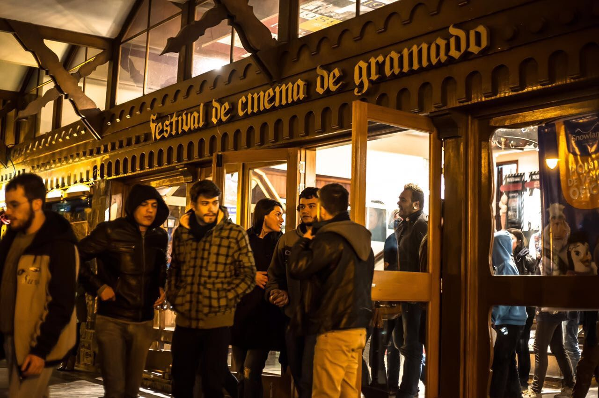 Gramado Theater |
| 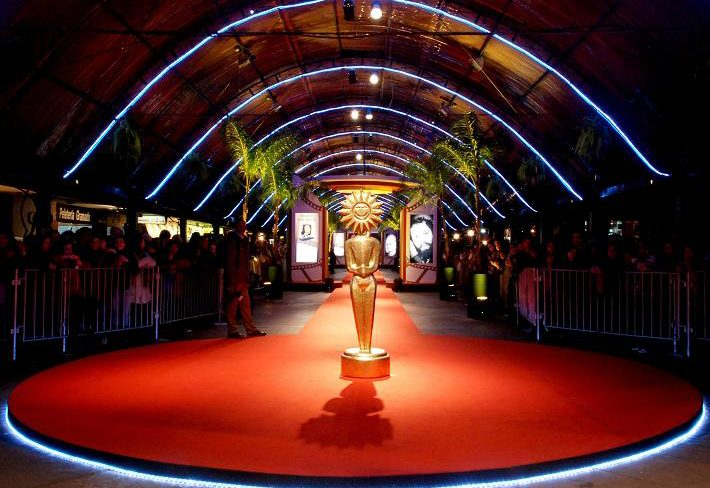 | 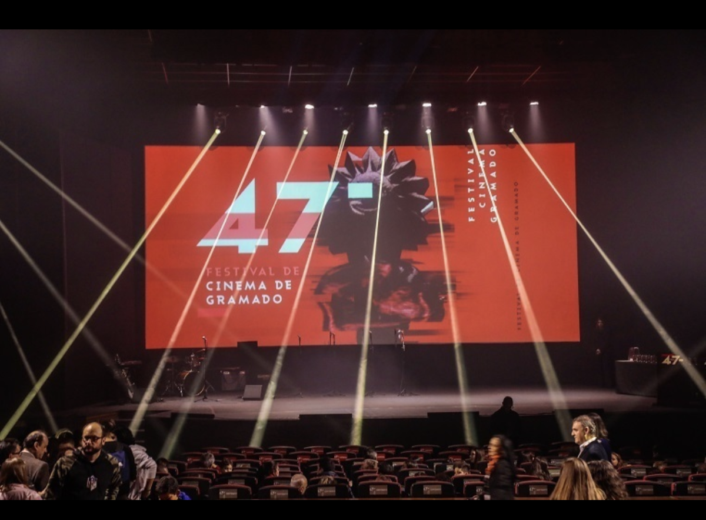 |
Natal Luz - "Christmas of Lights"
Natal Luz, which literally means "Christmas of Lights", is an annual Christmas festival in Gramado, Brazil. The festival began in 1986 as a small concert conducted by Eleazar de Carvalho, one of the country's most celebrated orchestra conductors. Over the years, it has grown into Brazil's largest Christmas event.
The Natal Luz is celebrated in Gramado, a city in Rio Grande do Sul. Gramado has been labeled the country's Christmas capital, an honor it has held for over 20 years. The celebration gathers around 1.5 million people every year and runs from November 12 to January 13, making it one of the longest Christmas festivals in the world.
| 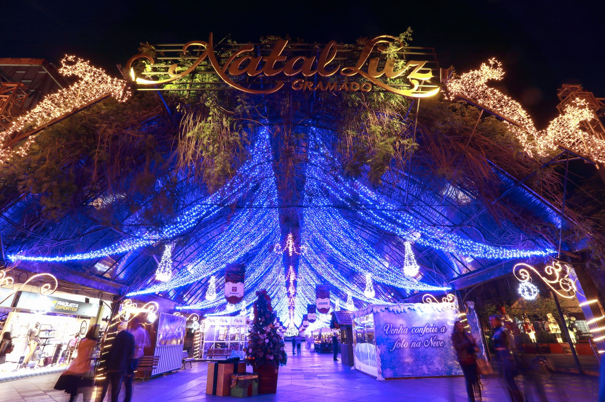 | 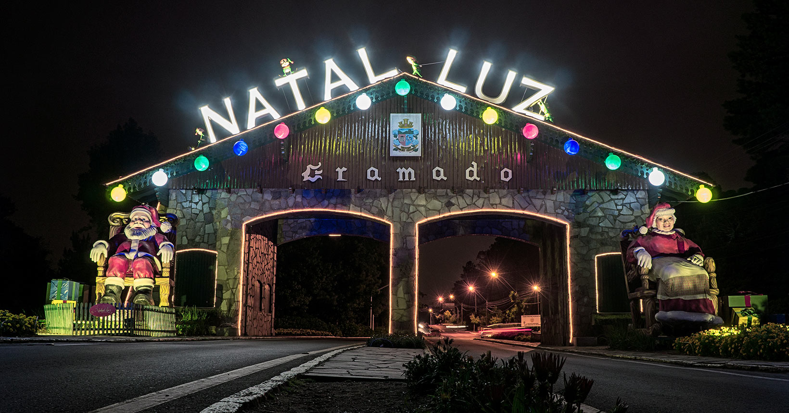 |
| 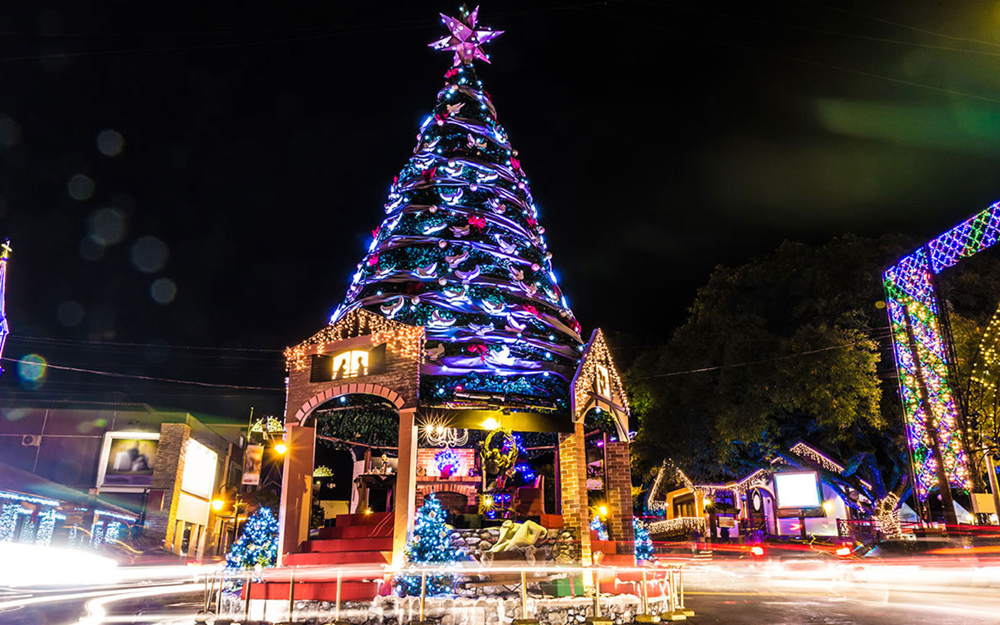 | 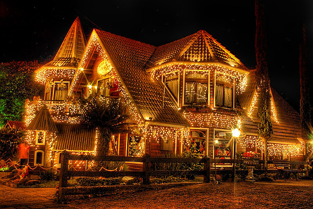 |
Source Wikipedia
Chocofest - Nova Petropolis
Chocofest is a festival that takes place annually at Easter in the city of Nova Petrópolis, in the state of Rio Grande do Sul. It is the largest chocolate fair in Brazil.
The event features themed décor, music and dance parades, children's programming, theater performances, art exhibitions and sale of Easter products.
The covered street of Nova Petrópolis turns into the Candy Planet during the event, accommodating most of the attractions.
In 2014 Chocofest presented the world's largest chocolate rabbit, sculpted by Enio Fritsch, joining the Guinness Book.
During Chocofest, there is the traditional exhibition of giant Easter eggs, painted by local artists. In 2014 the eggs were painted inspired by Easter in different countries, showing how the date is celebrated, with a bit of history and culture.
| 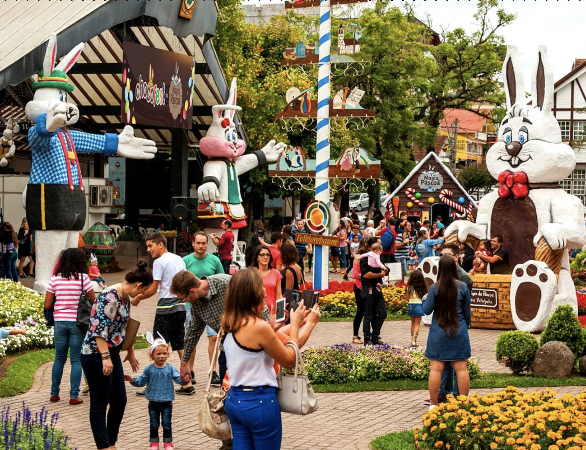 | 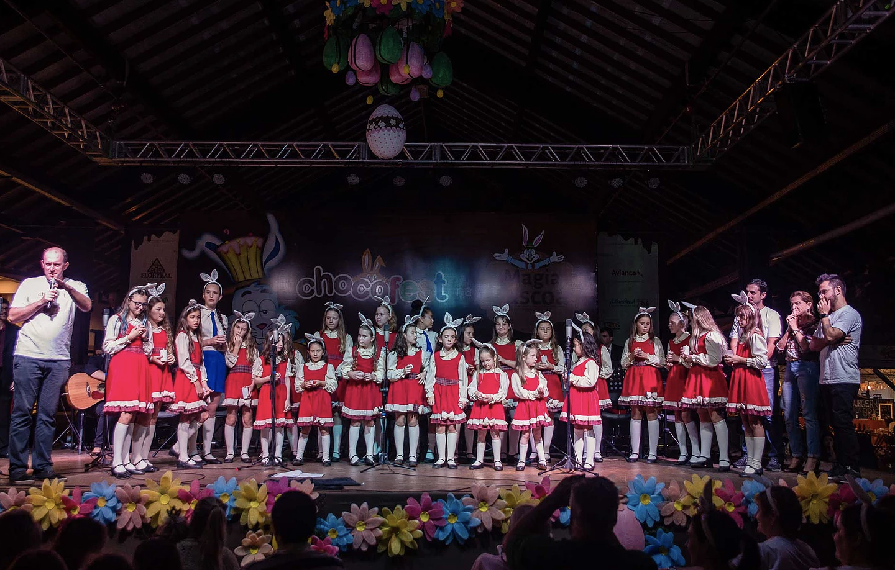 |
| 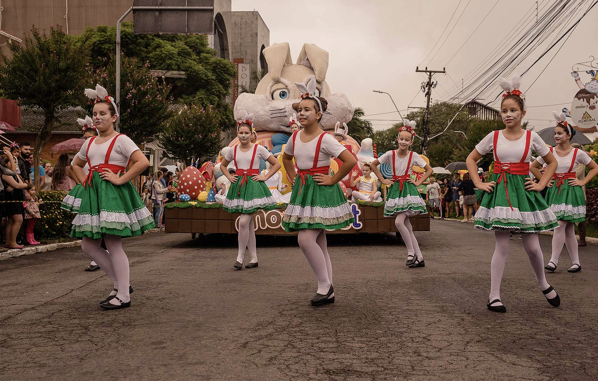 | 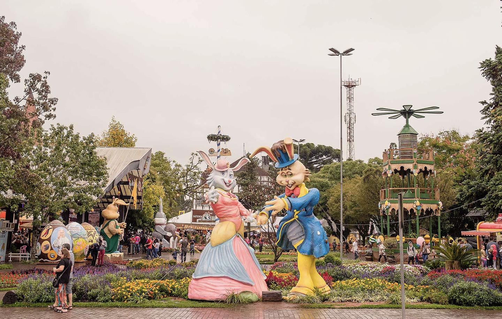 |
Source Wikipedia (in portuguese)